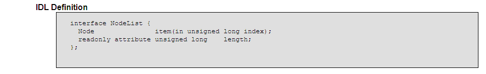

JavaScript Temelleri
Bölüm 19
W3C Belge Nesne Modeli (W3C Document Object Model) (W3C-DOM)
Bölüm 19.6.3 Sayfa 3
19.6.3 - NodeList Arabirimi
Bu arabirim bir düğüm tipini değil, düğümleri içeren bir koleksiyon nesnesi örneğini tanımlar. Koleksiyon nesnesi yeni bir nesne türüdür. Bu öntanımlı bir JavaScript nesne türüdür ve yapılandırıcı fonksiyonu kullanıcılara açık değildir. Kolleksiyon nesnesinin yapısı sadece aşağıda görülen arabirim tanımı ile belirtilmektedir. Kullanıcılar bu nesne tipini, tanımında yazılan özelliklerinden yararlanarak kullanabilirler.

Şekil 19.6.3- 1 - DOM Düzey 2 de NodeList Arabiriminin IDL Yazılımı
Bu arayüzde tanımlanan NodeList yapısında kolleksiyon nesnesi, item adı verilen elemanlardan oluşmaktadır. Şekil 19.6.3- 1 deki NodeLİst tanımı incelendiğinde, NodeLİst tipinde bir kolleksiyon nesnesinde item olarak tanımlanmış elemanların birer düğüm nesnesi olarak tanımlandıkları görülür.
NodeList (Düğüm Listesi) yapısında koleksiyonlar, sadece bir element düğümünün childNodes özelliğpinin değeri olarak oluşurlar. Bu toplulukta, item özelliği ile tanımlanmış elemanler, belirli alt düğümlere karşı gelirler. NodeList tipindeki toplulukların elemanlarının sıralanması, alt düğümlerin belge ağacında tanımlanma sıralarıdır.
Bir belge ağacında, bir elemntin alt düğümleri bazen belirtilmiş durumdadır. Örnek olarak bir paragraf elementinin içerdiği <span> elemenlerinin sırası programcılar tarafından belirtilmiştir. Bazı durumlarda ise, örnek olarak bir elementin alt düğümlerine erişildiğinde, element düğümü olmayan örnek olarak Text tipi alt düğümler gibi alt düğümlerin sıralanması önceden belirlenemez. Erişilen düğümün tip kontrolunun yapılması gerekir.
NodeList kolleksiyon nesnesinin iki tane özelliği bulunmaktadır. Bunlar item ve length özellikleridir.
NodeList yapısında kolleksiyon nesnesinin item özelliği, koleksiyonu (topluluğu) oluşturan elemanlara erişimi sağlamaktadır. Topluluk elemanlarına item(0), item(1),... item(n), gibi bir tamsayı koleksiyon indisi ile erişilebilmektedir.
Şekil 19.6.2-1 deki Node (Düğüm) arabirimlerinin yapısı (generik düğüm tipi nesnelerin yapısı) incelendiğide, düğüm nesnelerinin alt düğümlerini içeren childNodes, özelliğinin geri döndürdüğü değer, NodeList tipinde koleksiyon nesnesi yapısındadır. Bu durumda, sayfaya yerleşik bir düğümün alt düğümlerine erişim için, NodeList tipinde koleksiyon nesnelerin uygulanmasının iyi özümsenmesi gerekir.
Düğüm listesi nesne sıınıfının yapısı, dizi nesne sınıfına benzer, aynı izi sınıf bir uzunluk özelliği vardır ve liste elemanlarına aynı dizi elemanları gibi tamsayı indislerle erişilebilir. Düğüm listesi nesnelerinde de elemanların dizilişi aynı dizilerde olduğu gibi, 0 ıncı elemandan başlar. Yani bir düğüm listesi koleksiyon nesne örneğinde, ilk elemanın erişim indisi, aynı dizilerde olduğu gibi 0 dan başlamaktadır. NodeList arabiriminin içeriği dinamik olarak güncellenir. Sayfadaki değişikliklere göre, liste elemanları sürekli olarak yenilenir ve length özelliğinin değeri değişir.
Düğüm listelerinin dizi nesnelerine yakın benzerliği, düğüm listelerin de diziler gibi kullanımını sağlayabilir. Kodları aşağıda görülen programda bir düğüm listesi koleksiyonundaki elemanlara, dizi elemanları gibi erişim sağlanmaktadır.. Bu program ilişikli olduğu uygulama sayfasında çalışmaktadır.
/* <![CDATA[ */ function başlat() { var refDüğüm = document.getElementById('hedef'); sonuçYaz('Alt Düğümler Koleksiyon Uzunluğu (Eleman Sayısı) : ' , refDüğüm.childNodes.length, 'sonuç1'); for (var i = 0; i < refDüğüm.childNodes.length; i++ ) { sonuçYaz('Alt Düğümler Koleksiyonu Eleman[' + i + '] Alt Düğüm Tipi : ', refDüğüm.childNodes[i].nodeType, 'sonuç2'); sonuçYaz('Alt Düğümler Koleksiyonu Eleman[' + i + '] Alt Düğüm Türü : ', düğümTipiniBelirle(refDüğüm.childNodes[i]), 'sonuç3'); } i--; bilgiYaz('Son Alt Düğüm, Eleman[' + i + '] dır.', 'sonuç4'); } sayfaYüklenmesiTamamlandıktanSonraÇalıştır(başlat); /* ]]> */
Yukarıdaki program, gayet iyi çalışmakta ise de bu yöntem kesinlikle kullanılmamalıdır. NodeList (Düğüm Kistesi) tipinde koleksiyonlar, NodeList nesne sınıfı örnekleridir ve Array (Dizi) sınıfı nesne örnekleri değildir. İki sınıf arasındaki benzerlikten ötürü yukarıdaki program çalışabilmektedir. Fakat benzerlikler sadece her iki sınıfın da length özelliği olması ve her iki sınıfında elemanlarına tamsayı indislerle erişilebilmesi ile sınırlıdır. NodeList nesne sınıfı koleksiyonların nesne yapıları, dizilere özgü concat() gibi metotları içermemektedir. Bu nedenle düğüm listesi koleksiyonlarını, diziler gibi algılamaktan vazgeçmeliyiz. Bu tip uygulamalar eskiye aittir ve W3C-DOM spesifikasyonunda öngörülmemektedir. Çalışmalarımızı eskiye doğru değil yeni yöntemlere yönlendirmeliyiz. Düğüm listeleri, Şekil 19.6.3- 1 deki W3C-DOM spesifikasyonunda tanımlı olan özellik ve metotları kullanılarak, W3C-DOM spesifikasyonunda öngörüldüğü ve aşağıdaki uygulamalarda uygulandığı gibi, NodeList (Düğüm Listesi) tipinde nesne örnekleri olarak uygulanmalıdır. Modern yöntemlerin programcılardan beklentileri de bu yöndedir.
W3C-DOM spesifikasyonunun Şekil 19.6.3 - 1 de görülen tanımına göre, NodeList Arabirimi yapısındaki koleksiyonların elemanlarına, bu koleksiyonların item özellikleri kullanılarak erişilebilir. Her bir item bir koleksiyon elemanına denk gelir. Koleksiyon elemanları, 0 dan başlayarak tamsayı indislerle erişlebilecek şekilde bitişik (contigious) olarak dizilmiştir. Diziliş sırası sayfada tanım sırasıdır. Her bir item geriye node (düğüm) tipinde bir nesne örneği döndürür.
Aşağıda NodeList tipinde bir nesne örneğinin elemanlarına spesifikasyonda öngörülen şekilde erişimi uygulayan bir programın, kodları aşağıda görülmekte ve bu program iliştirilmiş olduğu uygulama sayfasında, çalışmaktadır.
/* <![CDATA[ */ function başlat() { var refDüğüm = document.getElementById('hedef'); bilgiYaz('Koleksiyon Uzunluğu : '+ refDüğüm.childNodes.length + ' ; ' , 'sonuç'); for (var i = 0; i < refDüğüm.childNodes.length; i++ ) { bilgiYaz('Alt Düğüm Tipi : ' + refDüğüm.childNodes.item(0).nodeType, 'sonuç'); } sayfaYüklenmesiTamamlandıktanSonraÇalıştır(başlat); /* ]]> */
Yukarıdaki program, tüm belge çözümleyicilerde ortak olarak desteklenmekte ve sayfada id nitelik değeri 'hedef' olan paragraf düğümünün sadece bir tane metin tipi alt düğümü olduğunu belirtmektedir. Paragrafın metin içeriği, ileride görüleceği gibi, bu alt düğümün data özelliğinin değeridir.
Koleksiyon tipi nesne toplukları salt okunur niteliktedir. Kullanıcılar kendi koleksionlarını oluşturamaz sadece mevcut koleksiyon topluluklarının elemanlarına erişebiilirler.
NodeList tipinde koleksiyonların length özelliği, kolleksiyon içinde bulunan elemanların (item) sayını bir tamsayı değeri olarak döndürür. Bu özellik aynı dizi nesnesinin length özelliğine benzer.